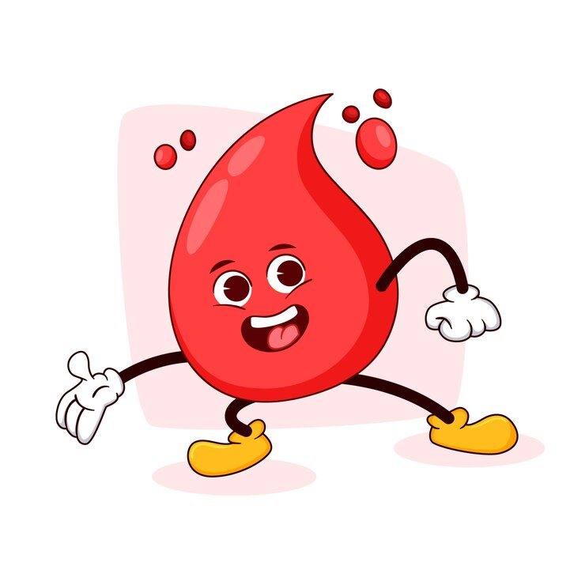
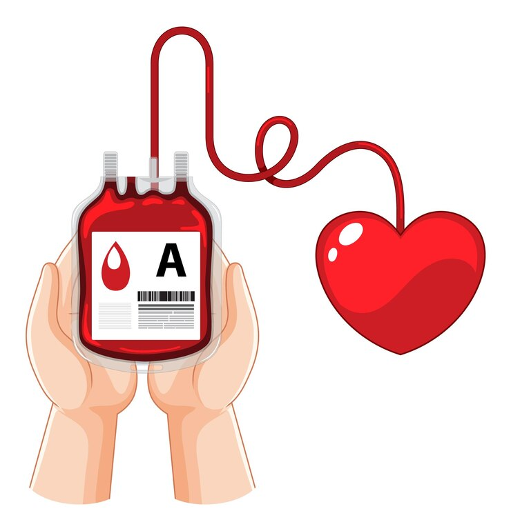

Four reasons why you should donate blood

Development of new red blood cells
Within the first 48 hours of blood donation, the donor's body starts replenishing the lost red blood cells. The replenishment process helps in staying healthy and productive at work.

Reducing risk of heart disease
As per several studies and reports, when there is a rise in the iron level in blood, it raises the chances of heart diseases. People should donate blood from time to time in order to reduce the iron level in the blood.

Burns calories
Donating blood can burn approximately 650 calories for each pint that is like 450 ml of blood.

Free blood test
On donating blood, the donor receives a free mini health screening and blood tests.